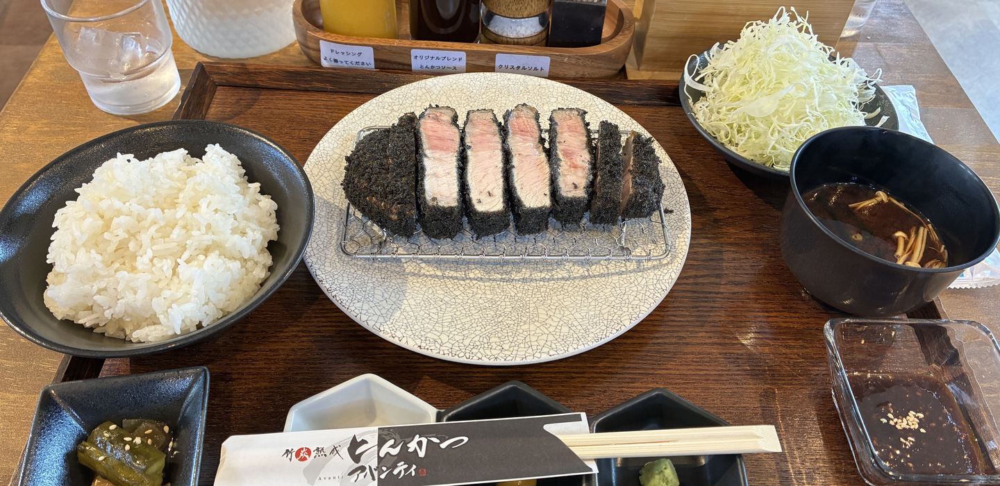

贅沢とんかつ アバンティ
三重県松阪市京町515-8 SUNRISEビル 2F
電話 0598-67-5615
竹炭熟成とんかつ アバンティ
三重県松阪市中道町530-4 フードパークこむぎむら7号地
電話 0598-30-4330

高温の黒か、低温の白か。使用するお肉はどちらも同じ熟成豚。
掲載の価格です（食べログ 2026年2〜6月更新、店の投稿 2026年9〜10月）。来店時の価格と異なる場合があります。
衣は黒（高温）が基本です。低温の白いとんかつに変更可 ＋100円
ごはんのお代わり 小100円・中150円・大200円。キャベツのお代わり無料。味噌汁のお代わり100円。